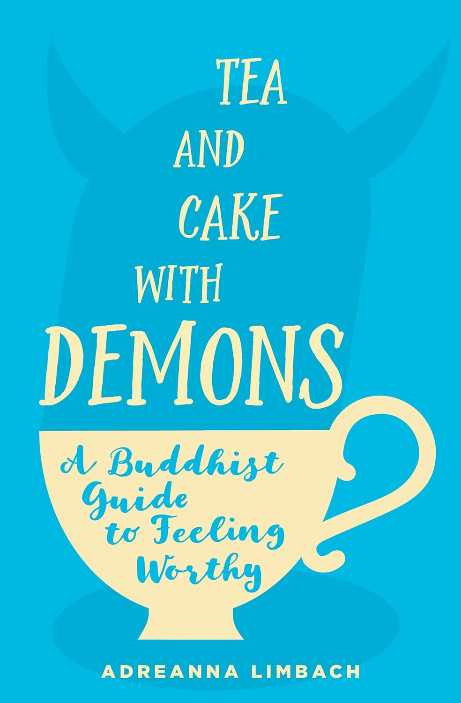
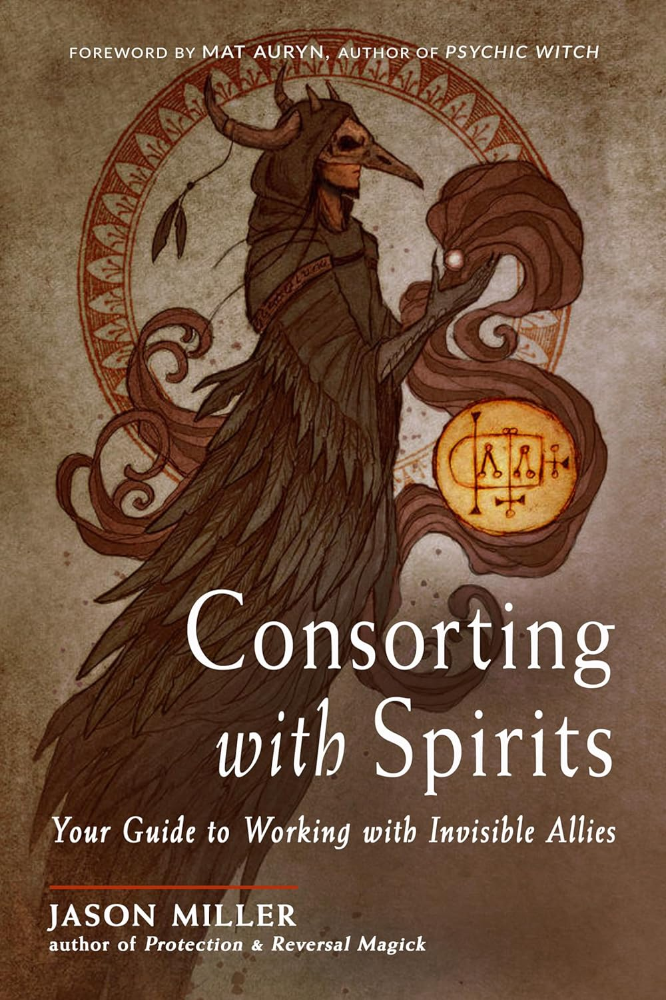
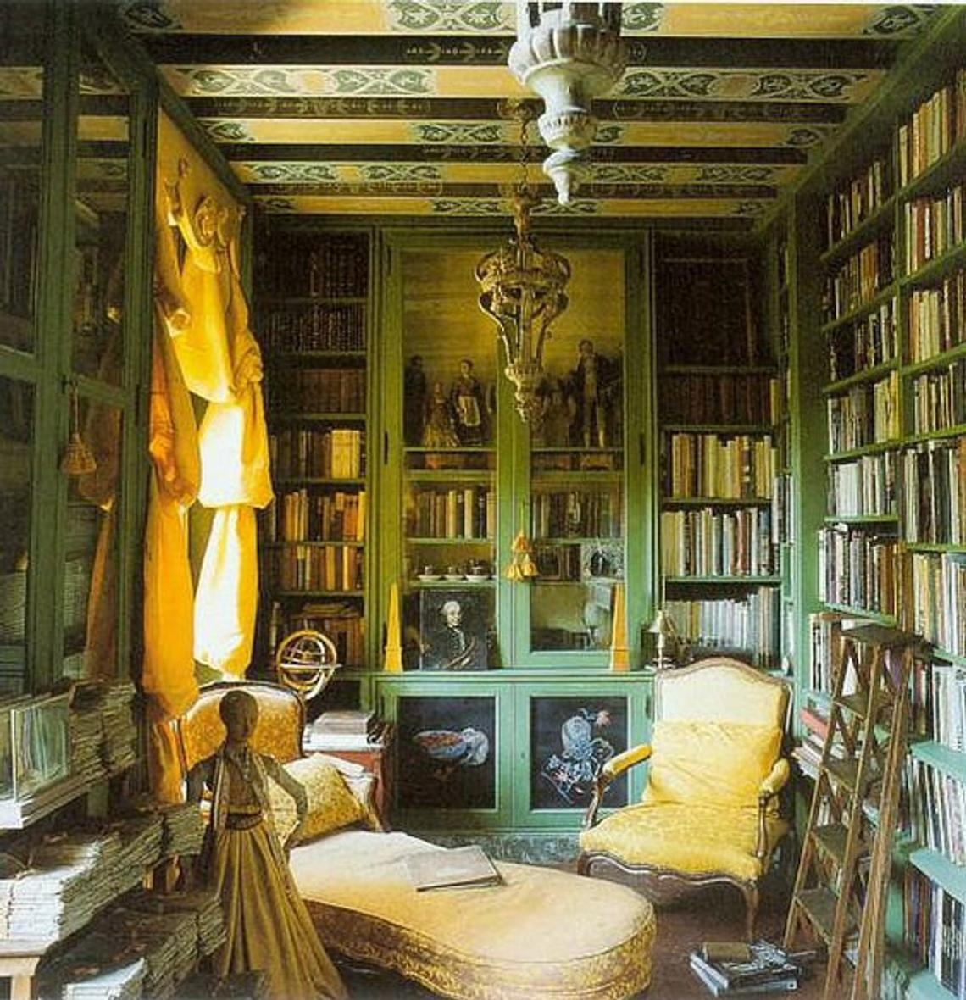

Did You Hear That....?
It's Women's History Month!
Celebrate the incredible contributions, triumphs, and resilience of women throughout the ages.
ZEquinox - Here comes the sun!
In Celtic mythology, the spring equinox is associated with the festival of Ostara or Eostre, which celebrates the goddess of fertility and the coming of spring. However, it's also believed to be a time when the veil between worlds is thin, making it easier for spirits and otherworldly beings to interact with the living. Whether your want to keep the unnamed horrors at bay or invite them to tea - we've got you covered!


Events
The animus of the Library is the population of Arkham itself. The Library strives to honor the town’s rich history of artists, scholars and free thinkers by offering not only our extensive collection but also sponsoring events that highlights the varied talents and expertise of our residents.
Performance by Morgan
Local Son Morgan M perfoms songs from this new album "CottageCore"

Tales from the vault
Archivist Sue will give a talk on some of the highlights from the Ward family collection.